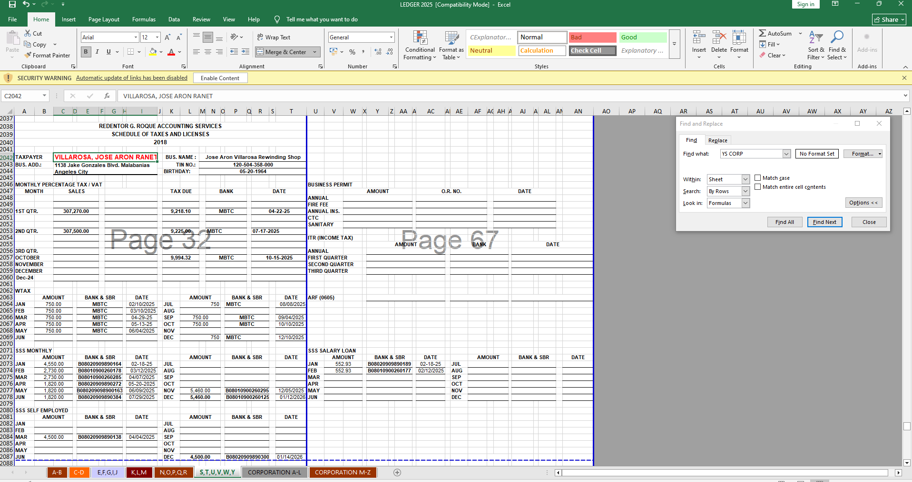
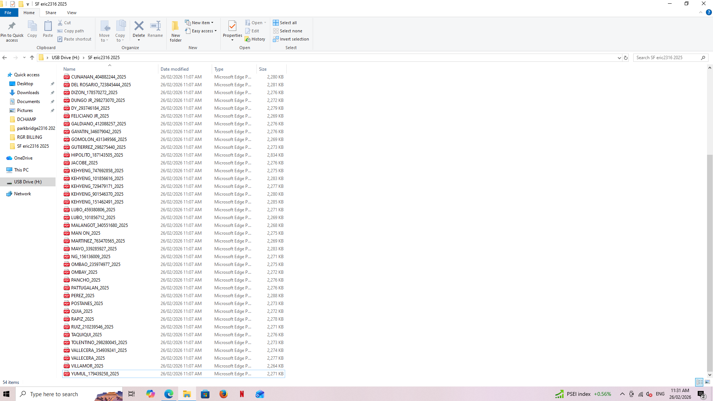
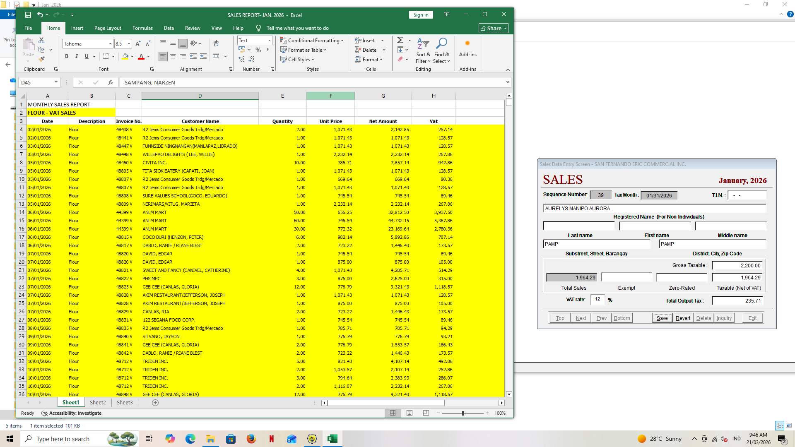

Data Entry
Entered a client's sales, tax payments and contributions into a yearly ledger, including amounts, banks and payment dates for each month and quarter.

Entered a client's sales, tax payments and contributions into a yearly ledger, including amounts, banks and payment dates for each month and quarter.

Sorted and named a folder of 54 client PDF files alphabetically, using a consistent format so any record can be found quickly.

Encoded monthly sales into an Excel report and an accounting entry screen, with invoice numbers, net amounts, VAT and total output tax.